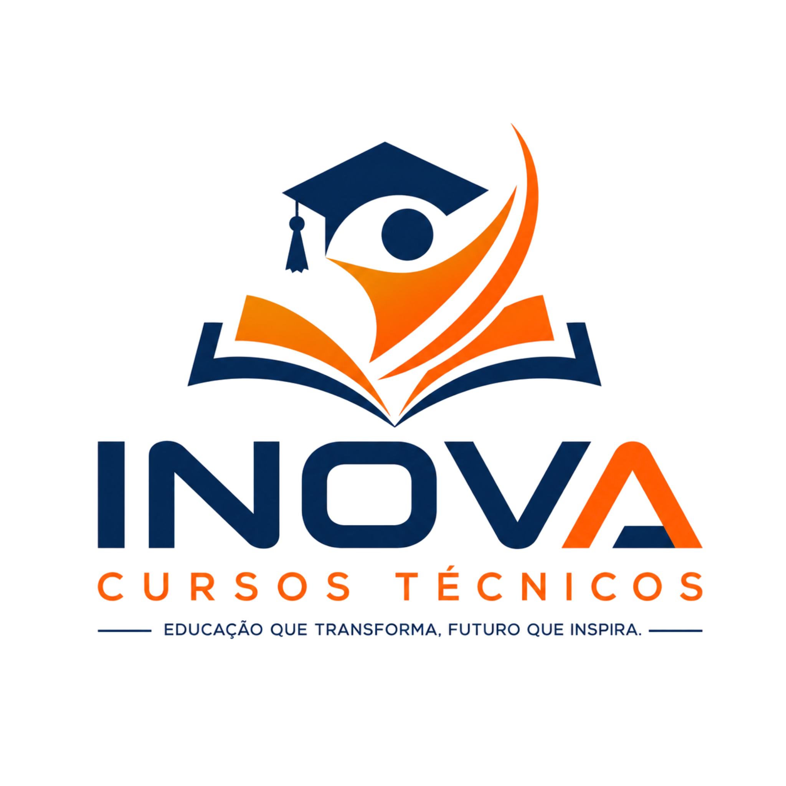

AMBIENTE DE APRENDIZAGEM
Meu Inova
Uma plataforma dedicada ao aprendizado: disciplinas, videoaulas, materiais de apoio e questões de prova.
ENSINO ONLINE
Bem-vindo ao Meu Inova
Escolha seu ambiente. Cada perfil utiliza credenciais individuais e permissões separadas.
Portal do AlunoAcesse suas disciplinas, assista às aulas, resolva provas e acompanhe seus resultados.Professores e AdministraçãoPublique aulas e materiais, monte questões e avaliações e acompanhe os acessos dos alunos.
Plataforma acadêmica integrada
Conteúdo e gestão em um só ambiente, com trilha de auditoria, senhas individuais e separação entre acesso do aluno e acesso institucional.
Conteúdo e gestão em um só ambiente, com trilha de auditoria, senhas individuais e separação entre acesso do aluno e acesso institucional.